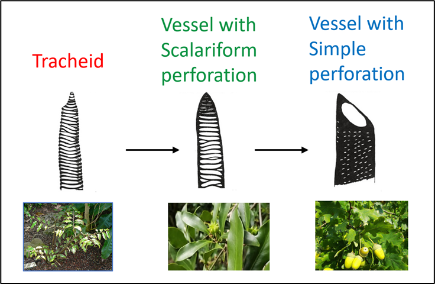

Evolution and biogeography of xylem elements in angiosperms
Xylem elements form the structural foundation of plant water transport systems, their structure closely tied to hydraulic efficiency, safety, and even gas exchange (Wen et al., 2020). Thus, my research investigates how xylem element shapes hydraulic performance, and in turn, influence the species’ distributions, and diversification trajectories. This is especially relevant in basal angiosperms, where xylem elements underwent a major transition—from tracheids to vessels with scalariform or simple perforation plates.
